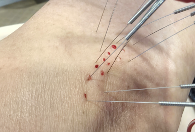
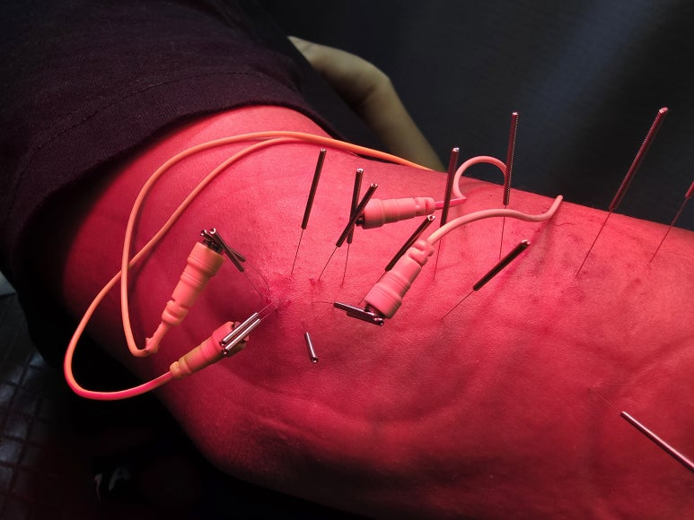
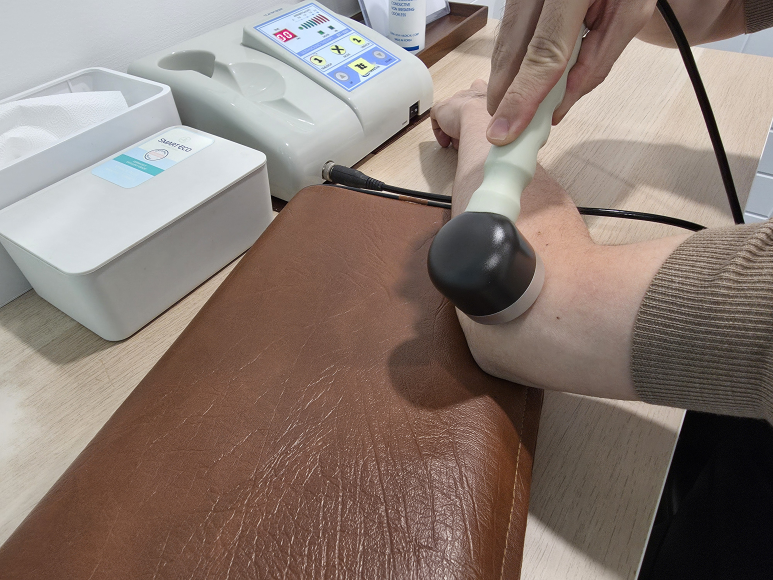

원인
손목과 팔꿈치를 반복적으로 사용하는 과정에서 힘줄 부위에 부담이 누적되며 통증이 생길 수 있습니다.
치료 과정



치료 기간
증상 정도와 사용량에 따라 다르며 보통 4~6주 단위로 회복 경과를 확인합니다.
Elbow Care
팔꿈치 바깥쪽 통증, 손목 사용 시 불편감, 반복적인 악화 양상을 함께 확인합니다.
손목과 팔꿈치를 반복적으로 사용하는 과정에서 힘줄 부위에 부담이 누적되며 통증이 생길 수 있습니다.



증상 정도와 사용량에 따라 다르며 보통 4~6주 단위로 회복 경과를 확인합니다.